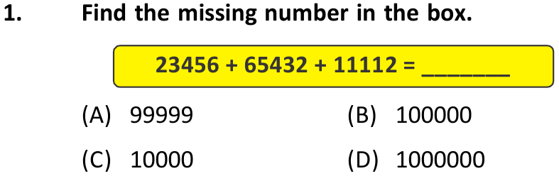
Find the missing number in the box.
23456 + 65432 + 11112 = _______
99999
100000
10000
1000000
(B) 23456 + 65432 + 11112 = 100000
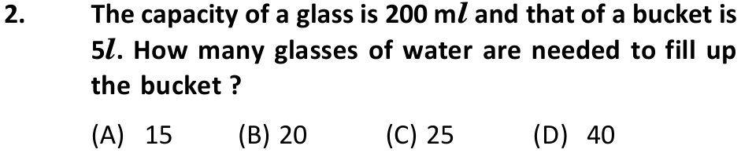
The capacity of a glass is 200 ml and that of a bucket is 5l. How many glasses of water are needed to fill up the bucket ?
15
20
25
40
(C) Capacity of a glass → 200 ml
Capacity of a bucket = 5 l [1 l = 1000 ml] 5 l = 5 × 1000 ml = 5000 ml
No. of glasses of water requried
= 5000 ÷ 200 = 25 glasses
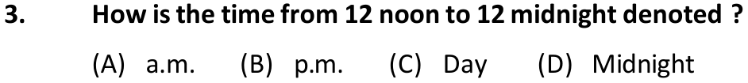
How is the time from 12 noon to 12 midnight denoted ?
a.m.
p.m.
Day
Midnight
(B) Time from 12 noon to 12 midnight = p.m.
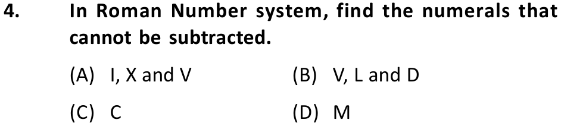
In Roman Number system, find the numerals that cannot be subtracted.
I, X and V
V, L and D
C
M
(B) V, L and D never be subtracted.
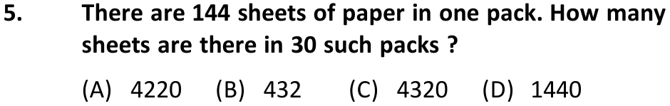
There are 144 sheets of paper in one pack. How many sheets are there in 30 such packs ?
4220
432
4320
1440
(C) 1 Pack→ 144 sheets
30 Packs→ 144 × 30 = 4320
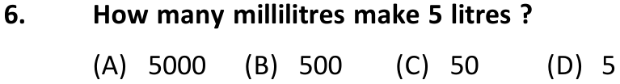
How many millilitres make 5 litres ?
5000
500
50
5
(A) 1 litre→ 1000 ml
5 litres→ 1000 × 5 = 5000 ml
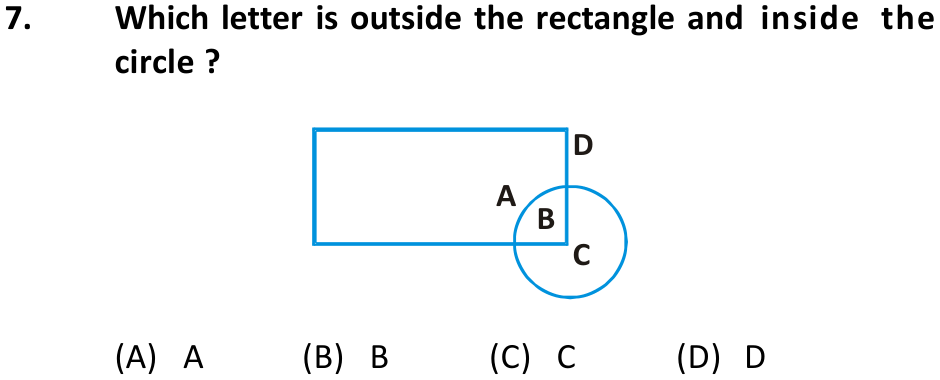
Which letter is outside the rectangle and inside the circle ?
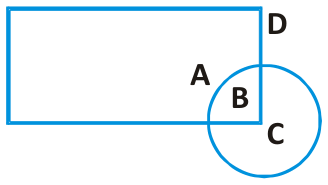
A
B
C
D
(C) From the given figure, Letter ‘C’ is outside the
rectangle and inside the circle.
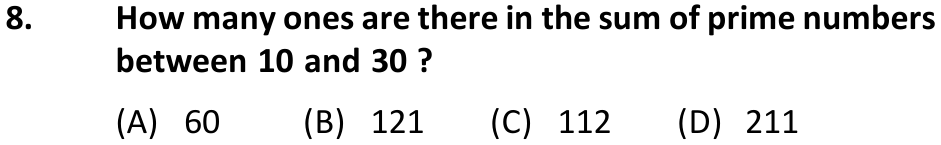
How many ones are there in the sum of prime numbers between 10 and 30 ?
60
121
112
211
(C) Prime numbers between 10 and 30
11, 13, 17, 19, 23, 29
Sum = 11 + 13 + 17 + 19 +23 +29 = 112 = 112 × 1 = 112 ones
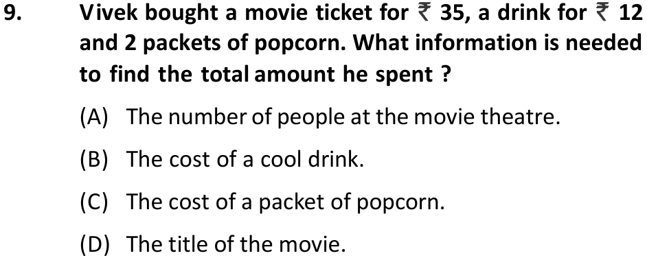
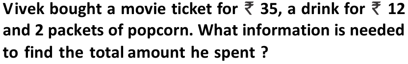
The number of people at the movie theatre.
The cost of a cool drink.
The cost of a packet of popcorn.
The title of the movie.
(C) From the question, the information needed is cost of
a packet of popcorn.
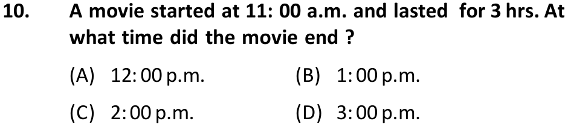
A movie started at 11: 00 a.m. and lasted for 3 hrs. At what time did the movie end ?
12: 00 p.m.
1: 00 p.m.
2: 00 p.m.
3: 00 p.m.
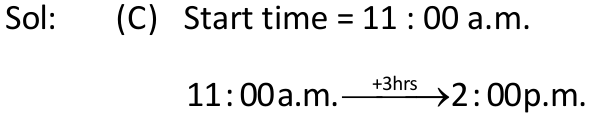
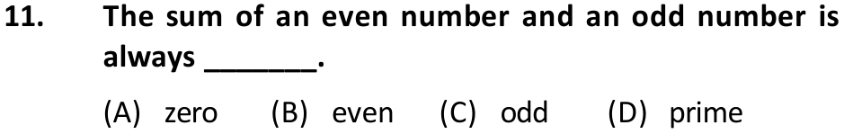
The sum of an even number and an odd number is always _______.
zero
even
odd
prime
(C) Sum of even number and an odd number
i.e., 2 + 3 = 5 is an odd number.
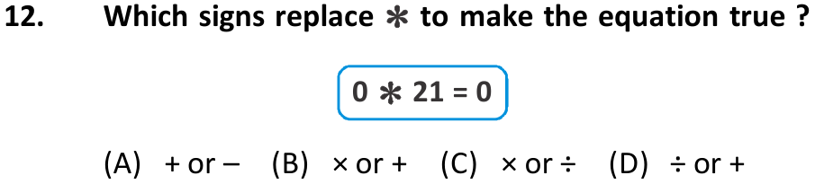
Which signs replace to make the equation true ?
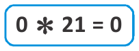
+ or –
× or +
× or ÷
÷ or +
(C) 0 × 21 = 0
0 × 21 = 0, 0 ÷ 21 = 0
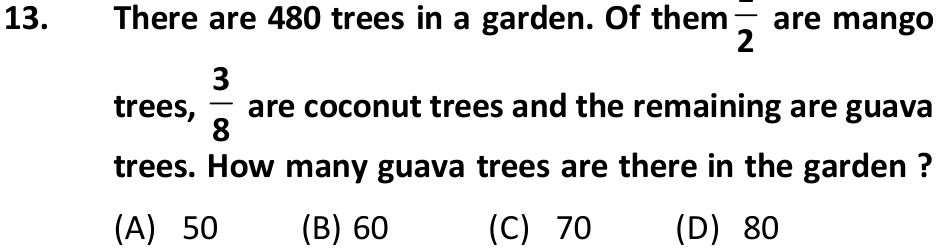
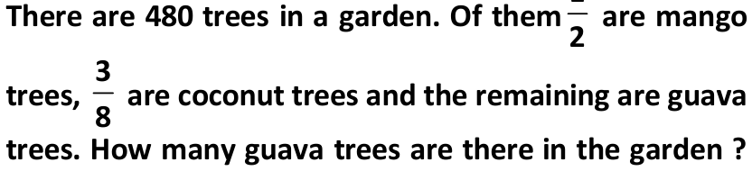
50
60
70
80
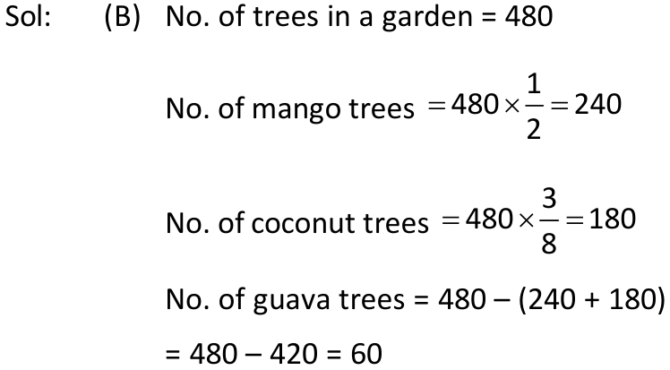
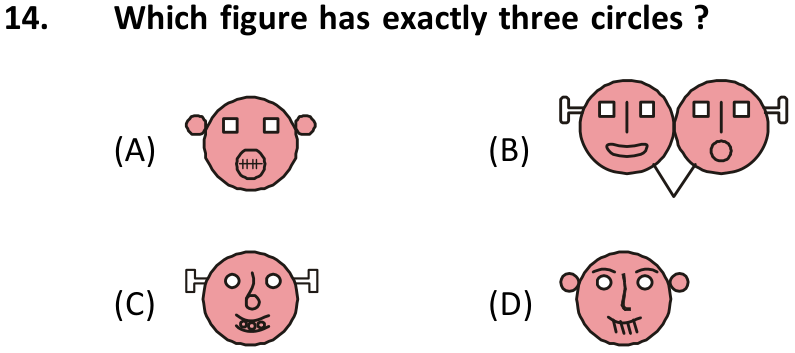
Which figure has exactly three circles ?
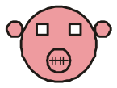
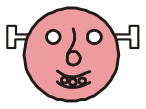
(B) Option ‘B’ has exactly 3 circles
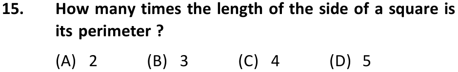
How many times the length of the side of a square is its perimeter ?
2
3
4
5
(C) Perimeter of a square = 4s (4 times)
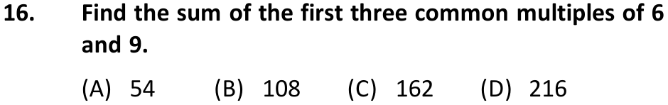
Find the sum of the first three common multiples of 6 and 9.
54
108
162
216
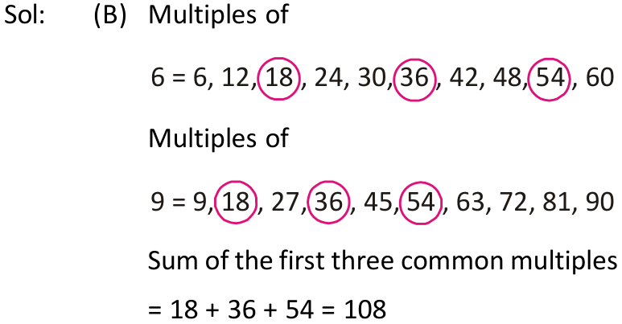
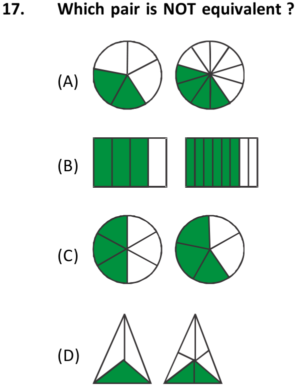
Which pair is NOT equivalent ?
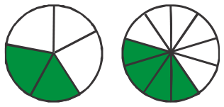
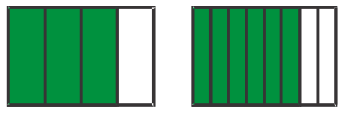
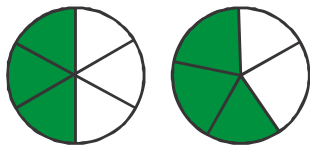
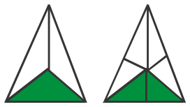
(C) Option is ‘C’ is not equivalent fraction.
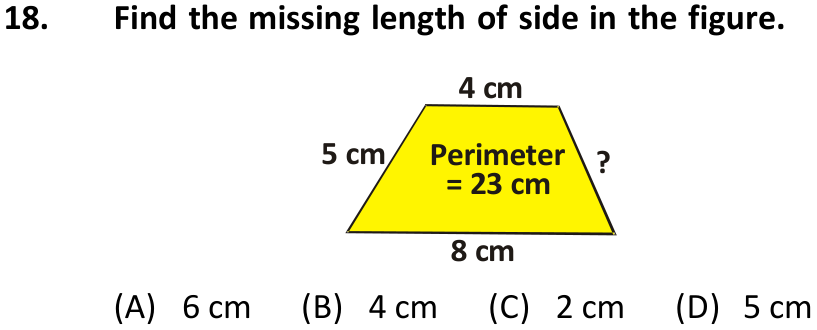
Find the missing length of side in the figure.
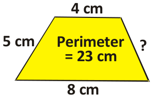
6 cm
4 cm
2 cm
5 cm
(A) Perimeter = 23 cm
Missing length of the side = ?
5 cm + 4 cm + 8 cm = 23 cm
Missing length of the side = 23 cm – 17 cm = 6 cm
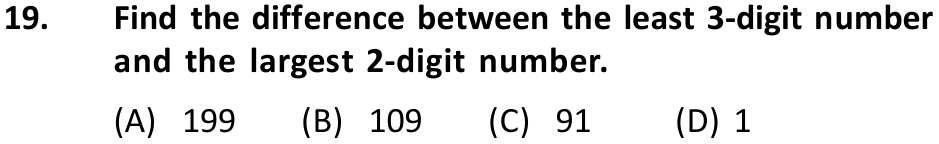
Find the difference between the least 3-digit number and the largest 2-digit number.
199
109
91
1
(D) Smallest 3– digit number = 100
Largest 2– digit number = 99 Difference = 100 – 99 = 1
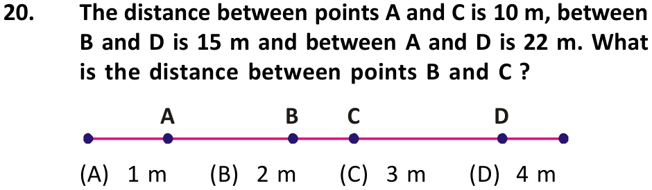
The distance between points A and C is 10 m, between B and D is 15 m and between A and D is 22 m. What is the distance between points B and C ?
1 m
2 m
3 m
4 m
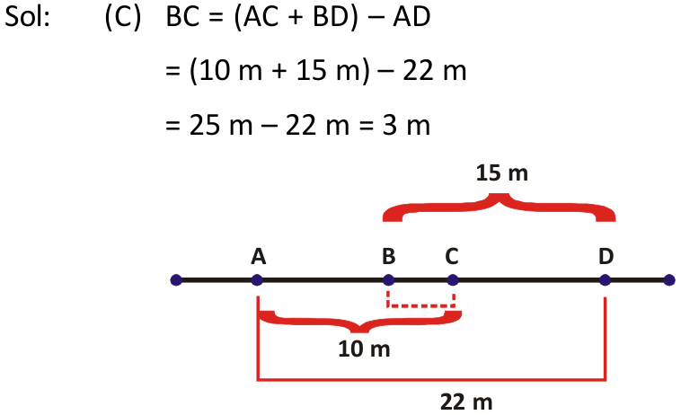
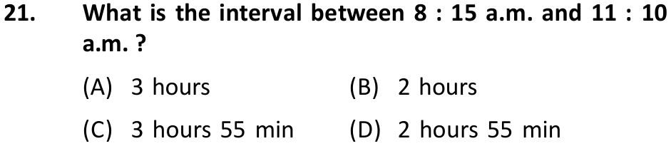
What is the interval between 8 : 15 a.m. and 11 : 10 a.m. ?
3 hours
2 hours
3 hours 55 min
2 hours 55 min
(D) 8 : 15 a.m→ 11 : 10 a.m
11 : 10 a.m – 8 : 15 a.m
= 10 : 70 a.m – 8 : 15 a.m
= 2 : 55 a.m = 2 hour 55 minutes
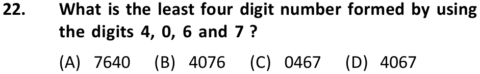
What is the least four digit number formed by using the digits 4, 0, 6 and 7 ?
7640
4076
0467
4067
(D) Given digits = 4, 0, 6 and 7
Least 4 – digit number = 4067
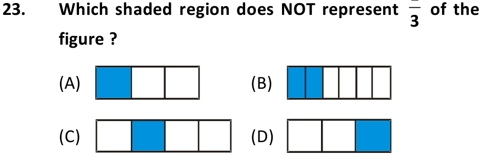
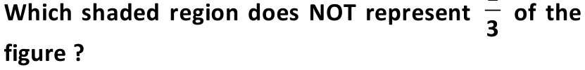
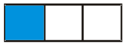
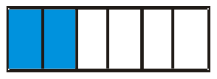
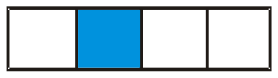
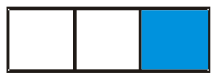
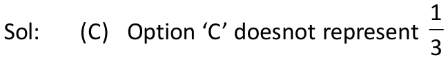
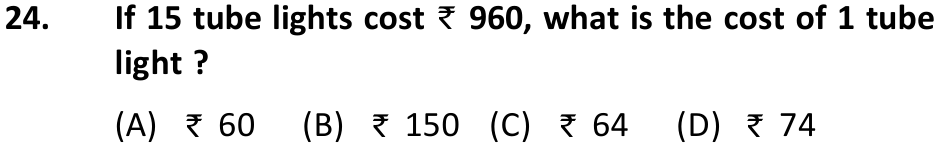
If 15 tube lights cost ₹ 960, what is the cost of 1 tube light ?
₹ 60
₹ 150
₹ 64
₹ 74
(C) Cost of 15 tube lights = ₹ 960
Cost of 1 tube light = ?
= ₹ 960 ÷ 15 =₹ 64
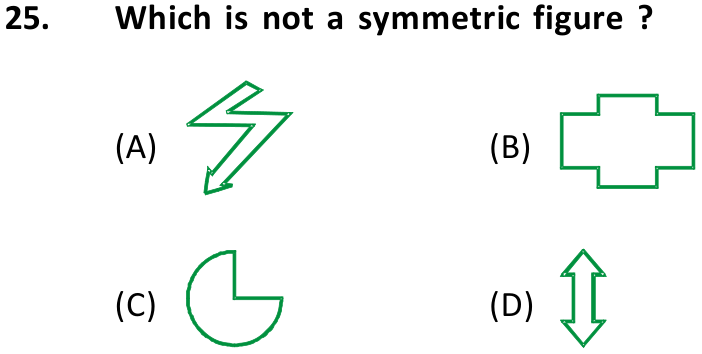
Which is not a symmetric figure ?
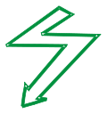
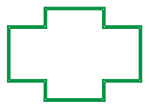
(A) Option ‘A’ does not represent symmectric figure
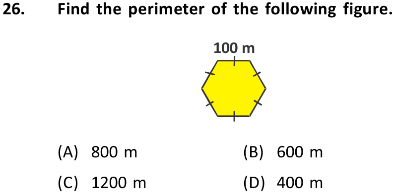
Find the perimeter of the following figure.
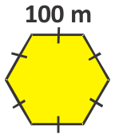
800 m
600 m
1200 m
400 m
(B) Perimeter of hexagon = 100 m + 100 m + 100 m + 100
m + 100 m + 100 m = 600 m
An orchard has 212 grape trees, 358 orange trees, and 174 apple trees. How many trees does the orchard have in all ?
570
634
644
744
(D) No. of grape trees = 212
No. of orange trees = 358
No. of apple trees = 174
Total no. of trees = 212 + 358 + 174 = 744
A number, less than 20 is a multiple of 3. Find the number if 6 is not one of its factors ?
15
12
18
6
(A) Given options are the multiples of 3 less than 20
Where option (A) i.e., 15 does not have 6 as one of its factors
Which number is divisible by 3 but not by 6 ?
12
36
45
72
(C) Option (A) 12 = 12 ÷ 3 = 4
12 ÷ 6 = 2
Option (B) 36 = 36 ÷ 3 = 12 36 ÷ 6 = 6
Option (C) 45 = 45 ÷ 3 = 15 45 ÷ 6 = not divisible by 6 Option (D) 72 = 72 ÷ 3 = 24 72 ÷ 6 = 12
The length of a wire is 6 m. What is the length of 14 such wires ?
76 m
82 m
64 m
84 m
(D) Length of a wire = 6 m
Length of 14 such wires = 6 m × 14 = 84 m
Venu went to a movie which lasted for 2 h 16 min. The movie ended at 8: 23 p.m. At what time did the movie start ?
7: 06 p.m.
6: 07 a.m.
10: 39 p.m.
6: 07 p.m.
(D) Duration of movie = 2 h 16 min
Ended time = 8 : 23 p.m.
Started time = ?
8 : 23 p.m. – 2 h 16 min
= 6 : 07 p.m.
Choose the correct answer to fill in the blank.
XXXCCC
XCXCXC
CCCXXX
CXCXCX
(C) XXX + CCC = 30 + 300
= 330
= CCCXXX
How many faces of the given figure are flat ?
2
4
5
6
(B) No. of flat faces = 4
Count the number of circles which are in front.
13
12
16
15
Which shape is similar to the group of three ?
(C) Count the number of circles between the lines.
Option A
Option B
Option C
Option D
(B) The sequence follows two rules:
1) The shape shift one place down each time and the
shape which is at the bottom comes to the top.
2) The shape at the top are black in colour, the shapes
in middle are white and the shapes at bottom alternate between black and white colours.
Option A
Option B
Option C
Option D
(C) Two things are happening:
1) The hexagon is replaced by a square
2) The position of the shorter lines and longer lines are
interchanged.
Identify the odd one out.
Eagle
Crow
Donkey
Swan
(C) Donkey is odd one out it is animal, remaining are
birds.
Option A
Option B
Option C
Option D
Which position does the MIDDLE letter of the word 'REASONING' occupy in the Alphabet ?
15
14
16
13
(A) The middle letter in REASONING is O. The position
of O in alphabetical order is 15.
How many circles more than triangles ?
8
4
7
11
(C) Number of circles = 11
Number of triangles = 4 11 – 4 = 7
Druwika was born in the month between February and June. (not including February and June) Druwika was born in a the month which does not start with letter M. In which month was Druwika born ?
February
March
May
April
(D) April is the only month beween February and June
which does not start with M
Option A
Option B
Option C
Option D
Select the option with the elements that most closely resembles the given Venn diagram.
Electricity, Doors, Cardamoms
Pencils, Eraser, Stationery
Glasses, Clothes, Aluminium
None of these
Pencils and erasers are available in stationery.
In a stack of three cards with holes, the top of each card is white and the bottom is yellow. Balu threaded these cards on a rope as shown below. Balu rearranged the cards without untying the rope. Which option below is possible to obtain the same threaded cards ?
Akash assembled a stacking toy as shown in the picture below. How many rings will he see looking at it from above ?
4
3
2
1
Seven sticks lie on top of each other. Stick 6 is at the top. Which stick is at the bottom ?
3
2
4
5
Stick 2 at the bottom.
The given figure shows a strip of stickers. What is the result after all the patterns have been removed from it ?